Advanced File Handling Techniques for Complex Waveform Analysis
Edwin Lowery, Verigy
Paper-ID: 127882 April 2011
Abstract
It is easy during application development and debug to become sidetracked with managing how to save and view multiple complex array files. Reading and writing files and handling multiple file formats with C++ can be time consuming, and error prone. SmarTest API's can make file handling much easier. The Signal Analyzer tool has new API's to make displaying arrays easier as well. This paper demonstrates some of the new API's introduced in SmarTest that make file handing and graphical array debug much more efficient and convenient.
1. Introduction
There are a variety of ways to work with sampled array data for signal analysis. C has file manipulation libraries, C++ has several file streaming classes and so on. Both can be used in SmarTest. However, the V93000 offers some new tools as of release 6.5.2 which make this process a lot easier. This paper presents some basic file read/write API's and show how they can be used to save and retrieve data in several formats. It will also cover some new building blocks for displaying arrays in the Signal Analyzer Tool.
2. File Read/Write API's
There are two main API's in SmarTest that are very helpful for working with arrays when they are needed to be read from and written to a file on the workstation. These API's are:
READ_WAVEFORM_DATAand
SAVE_WAVEFORM_DATA
What makes them easy to use is that they support a variety of file formats and in a single line can create or read a file from the system. Some of the file formats supported include: ASCII, Custom Waveform file format, Agilent 89600 format, and Signal Studio. To understand which one is appropriate, the array used (real or complex) along with sample rate information must be considered.
The Ascii text format file type consists of a single file to represent a single array of data. This array does not contain sampling rate information. This means that to represent real and imaginary arrays, two files must be saved. The custom waveform format is a Verigy format that also uses one file per array (I and Q) but also saves the sampling rate information and number of points in the header information of the file. The Signal Studio format is an Agilent proprietary format that is encrypted and compressed for protecting IP and easy transportation. It is the format used to communicate with most Agilent bench top equipment.
|
Ascii Text Format |
Custom Waveform Format |
Agilent 89600 Format |
Signal Studio Format |
|---|---|---|---|---|
Includes Sample Rate |
N |
Y |
Y |
Y |
Number of files for I and Q |
2 |
2 |
1 |
1 |
Compressed Binary Data? |
N |
N |
N |
Y |
|
Y |
Y |
Y |
N |
|
Y |
Y |
Y |
Y |
For the example used in this paper, the Agilent 89600 file format is used to keep track of a complex waveform. The Agilent 89600 formatted files consist of 10 lines of format statements and two columns of data as shown below. The advantage of working with files in this format is in one API, the data, and the sampling rates (stored as XDelta) can be obtained and used for future analysis. Also the file can be loaded and analyzed directly on the Signal Analyzer Tool and Agilent 89600 software for EVM and other modulation analysis. For this reason, this is the recommended file type for working with modulated signals.
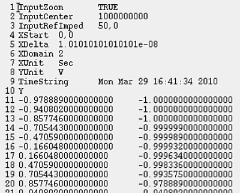
Figure 1 : 89600 File Format
For specific information about how to use these API's, please see SmarTest's Technical Documentation Center topic 113534.
For this article, it's easiest to show by example how to use these API's. Here is a code example from a working C++ UTM running in 6.5.4.
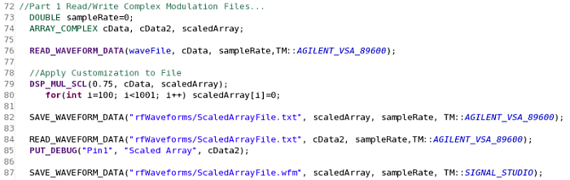
Figure 2: Example Code using READ_WAVEFORM and SAVE_WAVEFORM API's
The
code starts by declaring the data types used, and then reads in an array in the Agilent 89600
format as shown in Figure 1. The entire file along with its sample rate is read in with a single
API call. Next the file is scaled and altered as shown in lines 79 and 80 of Figure 2. The
altered file is saved with a new name in the same 89600 format, then read back into a different
array name "cData2" and then sent to the Signal Analyzer tool using the PUT_DEBUG statement. The
results of this PUT_DEBUG are shown in figure 3 below. Note that PUT_DEBUG now
supports ARRAY_COMPLEX data types. Finally, the new altered data is saved into
the Signal Studio encrypted format. This is very convenient if custom IP is used to alter or
generate a waveform, and it needs to be distributed in a secure way. The resulting encrypted
waveform cannot be read unless it is on Agilent bench equipment or Verigy test platforms. On the
V93000, the ScaledArrayFile.wfm on line 87 can only be loaded directly into
V93000 instrument memory, and not read by other API's.
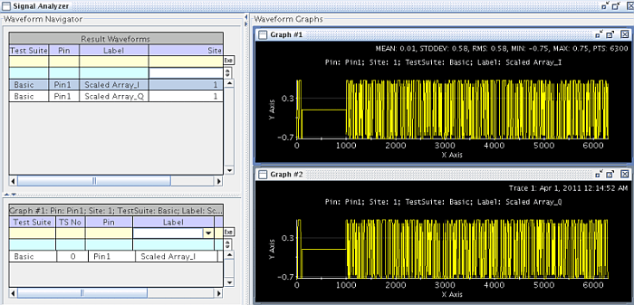
Figure 3: Results of Array manipulation in example code above.
3. Debugging Signals using the Signal Analyzer Tool
For debug and
development, the ability to graphically show arrays (both ARRAY_DOUBLE and
ARRAY_COMPLEX) is extremely important. Here is some more code intended to
demonstrate some of the new graphing API's available as of SmarTest revision 6.5.2.
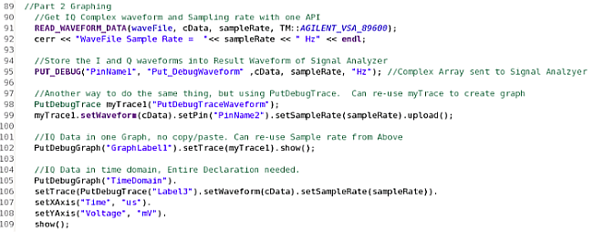
Figure 4: Sample Code using multiple Graphing Techniques
3.1 The PUT_DEBUG API
PUT_DEBUG: This is an API that is
used to put arrays of information in a graphical format in the Signal Analyzer tool. Very
important to its functionality is that the PUT_DEBUG API is only run when the
debug_analog testflow flag is set to 1. This makes sure that these API's are
only run while debugging to ensure test time is not impacted in production.
From Line 95
of the code above, the output of the PUT_DEBUG statement looks like this:
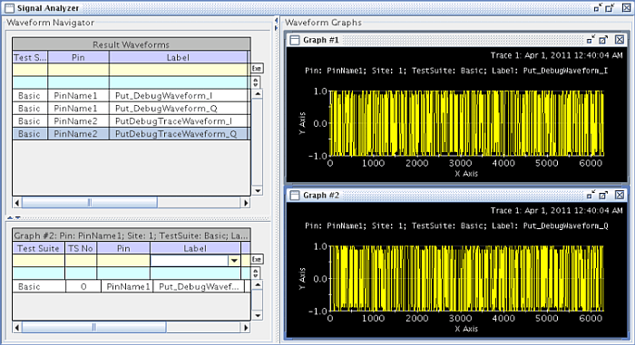
Figure 5: Signal Analyzer results of PUT_DEBUG API and ARRAY_COMPLEX data type.
Looking at figure 5 above, a few areas should be pointed out. On the upper left, the result waveforms are displayed. These are waveforms that are in Signal Analyzer memory, but have not yet been assigned to a graph. Any graphs that exist in memory will be seen on the right-hand side. Graphs consist of waveforms and whatever formatting has been applied to them through the selection menus. In the figure, Graph #2 is selected, and it consists of one waveform that is active in the graph, these details are shown in the bottom left panel or Graph summary.
In order to work with these two arrays with functions, such as complex spectrum analysis or demodulation analysis from the Signal Analyzer Tool, a few things must be done. First the "Q" waveform must be copied from Graph 2 Above.
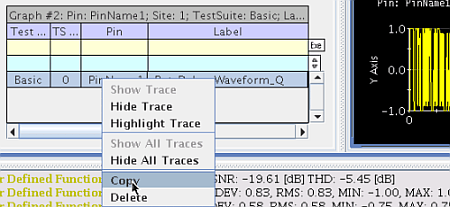
Figure 6: Copying the Q trace from Graph 2
Graph 1 then needs to be selected and then clipboard memory must be pasted into the graph for the "I" array.
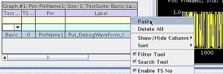
Figure 7: Pasting the Q trace onto Graph 1
This allows the two one-dimensional arrays to be shown on a single graph as a complex array as shown below.
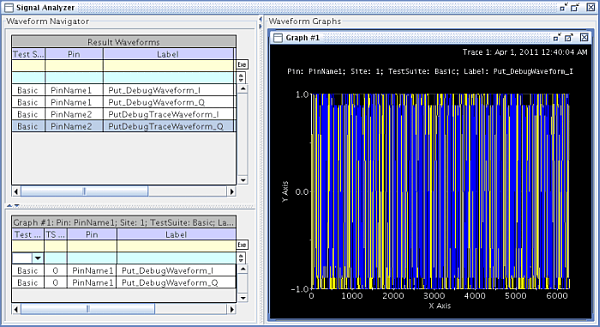
Figure 8: Combined I and Q arrays in a Single Graph
For modulation domain analysis, perform a right-click and select Analysis and then Demodulaton.
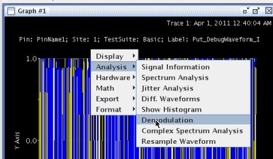
Figure 9: Demodulation of a Complex Signal
Next, the proper modulation format is selected...
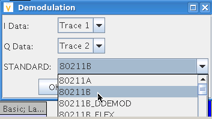
Figure 10: Selection of Demodulation Standard
and the sample rate is entered into the Sample Rate box, and any desired plots are selected. Note that for Agilent 89600-formatted files and Agilent Signal Studio-formatted files, the Sample Rate field is automatically populated.
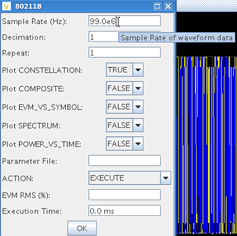
Figure 11: Adding in the Sample Rate by Hand
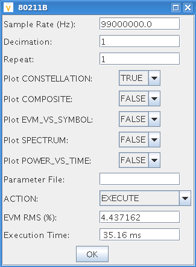
Figure 12: After Execution, EVM Results are shown in GUI
Finally, the Constellation plot can be seen below for this case, since it was selected in the GUI.
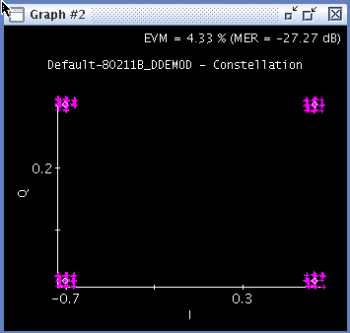
Figure 13: EVM Plot Calculated in SmarTest
This approach is relatively easy and the standard way that has been used in the past. However, some important improvements have been added that make these steps even easier.
3.2 PutDebugTrace and PutDebugGraph API's
There are two main new API's
to help the process of displaying arrays of information to the Signal Analyzer tool. These are
PutDebugTrace() and
PutDebugGraph().
PutDebugTrace(); - API for sending a
specific array to the Signal Analyzer tool. Works when the debug_analog flag is set to on. Can
handle ARRAY_D, vector<double>, ARRAY_COMPLEX,
vector<double>& iVector, vector<double>& qVector, and many more types. Is
used to build an object that can be used in PutDebugGraph()
below...
PutDebugGraph(); - API for creating an entire graph in the
Signal Analyzer tool. Also works when debug_analog flag is on, but this can be overridden if
desired. Can also be used to set labels for X and Y axes along with titles and units. When used
properly, much GUI work can be reduced.
The same results as shown in the PUT_DEBUG case above can be obtained by using the
PutDebugTrace command. This API creates a new trace that can be further used
and manipulated. An example of this is seen on lines 98 and 99 of the code example. In this
case, the Result Waveform section of the Signal Analyzer tool gets populated with the new
waveform PutDebugTraceWaveform_I and PutDebugTrace Waveform_Q.
However, line 102 shows that the newly created myTrace object can now be
populated into a graph automatically. Notice that the I and Q waveforms are already loaded into
this new graph (Figure 15.)
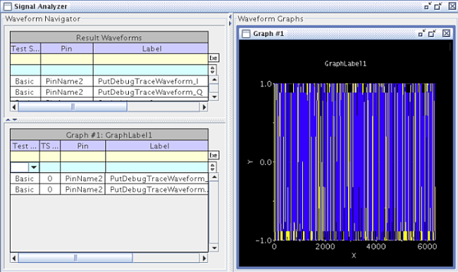
Figure 14:Pre-Loading I and Q Traces into a Graph
Furthermore, for signal analysis, if you right-click and select modulation, or spectrum analysis, the sampling rate is also carried over from the graph as shown below. This reduces the amount of typing and can prevent errors in the case of multi digit precision sampling rates.
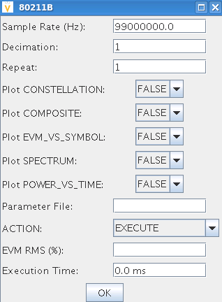
Figure 1: Sample Rate Automatically Acquired from Graph, No Need to Type it in
The graphs created can even be customized to show outputs with units and labels. The final example is shown on lines 105 through 109. Here a PutDebugGraph is used to create a time domain plot that includes the X axis shown in microseconds and the Y axis shown in millivolts.
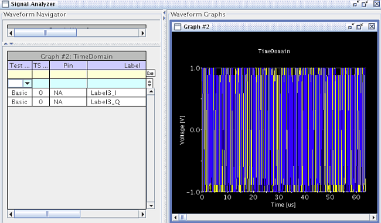
4. Conclusion
By correctly using the
READ_WAVEFORM_FILE() API and the SAVE_WAVEFORM() API's, many
lines of complicated code can be reduced. A benefit of sharing modulated or complex waveforms in
the 89600 format is that the waveform and its sampling parameters are automatically shared
together. These files can be loaded directly into the signal analyzer tool as well as into bench
equipment analyzers without modification. Finally, the use of the
PutDebugTrace() API is a great way to efficiently get complex data into the
signal analyzer tool in an easily manageable format.
5. Reference
For more information about these API's, please see Advantest's Technical Documentation Center. Enter in topics: 118743 (PutDebugTrace), and 118744 (PutDebugGraph).